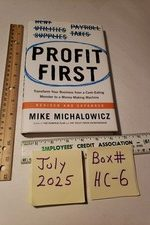

Library › Money & Finance
Profit First — Summary & Key Lessons

Transform your business from a cash-eating monster to a money-making machine — by flipping one formula.
📖 OPEN THE FULL INTERACTIVE BREAKDOWN →🌐 Read it in Hindi, Hinglish, Gujarati, Tamil & 22 more languages — free, with audio.
💡 The Big Idea
The standard formula — Sales − Expenses = Profit — is behaviorally broken: profit comes last, so there's never any (Parkinson's Law guarantees expenses grow to consume whatever's available). Michalowicz flips it: SALES − PROFIT = EXPENSES. Take a fixed percentage of every deposit as profit FIRST, move it to a separate (ideally hard-to-reach) bank account, and run operations on the remainder — forcing the same ingenuity you'd use in a crisis, permanently. The system: FIVE ACCOUNTS (Income, Profit, Owner's Pay, Tax, OpEx), twice-monthly allocation rhythm (the 10th and 25th), target allocation percentages reached gradually (start with even 1% profit — the habit matters more than the number), and quarterly PROFIT DISTRIBUTIONS you actually spend on yourself (the reward wires the habit). Plus the reckoning: most 'profitable growth' is a cash-eating illusion — smaller, profit-disciplined companies routinely put more actual money in the owner's pocket than revenue giants running on fumes.
🧠 The 6 Key Lessons
Lesson 1: Flip the Formula: Pay Profit Before It Can Escape
Chapters 1-3
Parkinson's Law runs your finances: whatever is available gets consumed — which is why revenue doubles and profit stays zero. The flip weaponizes the same law: remove profit from the operating account the moment money arrives, and expenses shrink to fit what's left, through a thousand small decisions you were always capable of making. This isn't accounting; it's behavioral design — the financial version of eating from smaller plates. Start absurdly small (1-2%) so the system survives its first quarter; raise allocations 1-2% per quarter until you hit healthy targets.
📖 Example: Michalowicz's own confession anchors the book: he built and sold two companies, looked rich, spent like it — and lost everything, sitting at the kitchen table telling his daughter the family was broke (she offered her piggy bank; he still chokes on the… Read the full example →
⚡ Do this: Open a second savings account this week. Transfer 1% of every deposit into it, automatically if possible. Don't touch it for a quarter. That's the whole start — the percentage grows later; the habit starts now.
Lesson 2: The Five Accounts: Give Every Rupee a Job and a Jail
Chapters 4-5
One bank account is a lie machine — the balance says 'you can afford it' with money that belongs to taxes, profit, and your own salary. The fix: INCOME (deposits land here, allocated twice monthly), PROFIT (untouchable between quarterly distributions — put it at a DIFFERENT bank to add friction), OWNER'S PAY (you are the most important employee; pay yourself consistently, not 'whatever's left'), TAX (the government's money was never yours — stop being surprised annually), OPEX (the only account that pays bills — its balance is the truth about what you can spend). The 10th/25th rhythm replaces daily panic-checking with twice-monthly clarity.
📖 Example: The serial pattern in his client stories: the owner with ₹8L in 'the account' approves a ₹5L purchase — not realizing ₹3L was GST, ₹2L was quarter's profit, and ₹2L was their own unpaid salary. Real spendable money: ₹1L. The five-account setup makes the same… Read the full example →
⚡ Do this: Set up the five accounts (even at one bank to start; move Profit to a second bank later). Route all income to Income; on the 10th and 25th, allocate by percentage: start 1% Profit, 50% Owner's Pay of your target salary, 15% Tax, rest OpEx. Adjust quarterly.
Lesson 3: Cut Costs Like a Surgeon, Distribute Profit Like a Ritual
Chapters 6-8
The remainder-run business now needs expenses to fit — Michalowicz's audit: print every recurring expense, and for each ask 'does this directly serve the customers who pay us — or my comfort/ego?' Cancel or renegotiate ruthlessly (target: 10% of costs immediately); replace 'we've always paid this' with annual re-bids. Efficiency beats austerity: the goal isn't cheapness, it's ensuring every cost multiplies value. Then the keystone ritual: every quarter, distribute 50% of the Profit account TO THE OWNER — and SPEND it on something real (a trip, the debt payment, the thing you've deferred). It feels wrong; it's the mechanism — a business that rewards its owner quarterly gets protected and grown; one that never pays becomes resented.
📖 Example: His 'survive the crash' demo: clients forced to cut 20% overnight in 2008-09 mostly... did fine, discovering that a shocking share of expenses were habit, not necessity — the software nobody logged into, the office bigger than the team, the conference… Read the full example →
⚡ Do this: Run the expense autopsy this week: export 12 months of expenses, mark each Value-Creating / Replaceable / Dead. Kill the dead ones today. And calendar your first quarterly distribution date — with a written plan for what YOU get.
Lesson 4: The Debt Spiral and the Vault: Surviving the Hard Cases
Chapters 9-11: Advanced Techniques
Profit First meets its critics in two hard cases. DEBT: if the business carries loans and card balances, profit-taking feels irresponsible — Michalowicz's answer is that debt destruction IS profit allocation: keep the profit habit (even 1%) for the psychological win, but distribute 99% of each quarterly profit payout against debt until it dies; the system's expense-shrinking pressure is precisely what stops NEW debt from forming, which no repayment plan alone achieves. GROWTH: 'I need to reinvest everything' is the most seductive lie — unprofitable growth just scales the leak. Fund growth from the OpEx account's improved efficiency, not from skipped profit; a business that can't grow while taking 5% profit has a broken model that more fuel won't fix. Advanced accounts complete the armor: the VAULT (3+ months of operating expenses as a quake-proof reserve), DRIP accounts for lumpy income (big client payments released as steady monthly allocations), and a MATERIALS pass-through account so high-COGS businesses compute percentages on REAL revenue, not inflated top line.
📖 Example: Michalowicz's case study 'Jorge and Jose' — a landscaping company drowning: maxed cards, a credit line at its ceiling, and revenue growth every single year of the misery (growth WAS the problem: every new contract needed equipment financed at retail). On… Read the full example →
⚡ Do this: If you carry business debt: start the 1% profit habit anyway today, and pre-commit 99% of your first four quarterly distributions to the smallest balance first. Simultaneously open the Vault account with a standing 1% allocation — the goal is three months of expenses, built drip by drip, so the next crisis is an inconvenience instead of a loan.
Lesson 5: The Rhythm: Small, Frequent, Unforgettable
Part 3: The Method
Michałowicz's second-layer lesson: profit distribution isn't a yearly surprise — it's a rhythm. His recommended cadence varies by cash flow (weekly, biweekly, monthly, quarterly), but the principle is constant: small, frequent profit distributions beat rare big ones, because frequency trains the behaviour and keeps the discipline alive. The owner who takes profit monthly internalizes 'profit is part of the business' — the one who waits for year-end treats profit as an accident. The rhythm also provides regular feedback: if your profit distribution keeps shrinking, the system is telling you something early, not at the bankruptcy. Rhythm is how a principle becomes a habit, and a habit becomes an identity.
📖 Example: Michałowicz describes clients who switched from annual profit checks to monthly distributions and reported a psychological shift: the business finally felt like it belonged to them, and spending decisions changed because 'the profit account' became a… Read the full example →
⚡ Do this: Set your profit rhythm this week: pick a frequency (weekly/monthly) and a fixed date for the distribution. Treat the first distribution like a non-negotiable bill.
Lesson 6: The 4 Percent Rule: Profit Is a Fixed Cost, Not a Leftover
Part 4: The Implementation
For businesses without enough margin for the full Profit First percentages, Michałowicz's '4 percent rule' is the starter kit: take 4% of every deposit immediately into the profit account — before taxes, before expenses, before anything. The number is deliberately small enough not to hurt and big enough to train the system; as the business grows, the percentage grows (to 10%, 15%, 20%). The rule works because it changes the psychological order: profit is no longer 'what's left after spending' but 'the first thing paid'. A tiny, consistent percentage compounds into both a real reserve and a permanent shift in how the owner thinks about money. The 4% is the crack in the dam that becomes the river.
📖 Example: Michałowicz shows how struggling businesses, unable to implement the full system, started with the 4% rule — and within a year had built their first real profit reserve while also becoming more disciplined on expenses, because the profit account made every… Read the full example →
⚡ Do this: Open a separate profit account today. On every deposit this month, move 4% into it immediately — before any other spending. Watch what the number looks like at month end.
✅ 5-Step Action Plan
- Flip the formula today: 1% of every deposit into a separate profit account.
- Build the five accounts and allocate on the 10th and 25th — stop trusting one balance.
- Raise profit allocation 1-2% per quarter toward healthy targets.
- Audit expenses quarterly: value-creating, replaceable, or dead.
- Distribute 50% of the profit account to yourself quarterly — and actually spend it.
⚠️ When This Doesn't Work
Michalowicz's 'profit first' is the best small-business fix ever written — and Bed Bath & Beyond is the proof that profit-first is not a strategy, it's a survival habit: the retailer was profitable for decades, took profit religiously, and still died because profitability without reinvention is just a slower decline. The book fixes the haemorrhage; it doesn't fix the disease. Profit-first keeps you alive long enough to figure out the future — but you still have to figure out the future.
💀 The Graveyard Proves It
🛏️ Bed Bath & Beyond — Bought Back Stock While the Ship Sank. Burn: $11.8B in buybacks → bankruptcy. Read the full case study →
💬 Best Quotes from Profit First
- “Profit is not an event. Profit is a habit.”
- “Sales minus profit equals expenses.”
- “A business that doesn't take profit first is just an expensive hobby with employees.”
Interactive version: mark lessons as read, listen in your language, share quote cards.